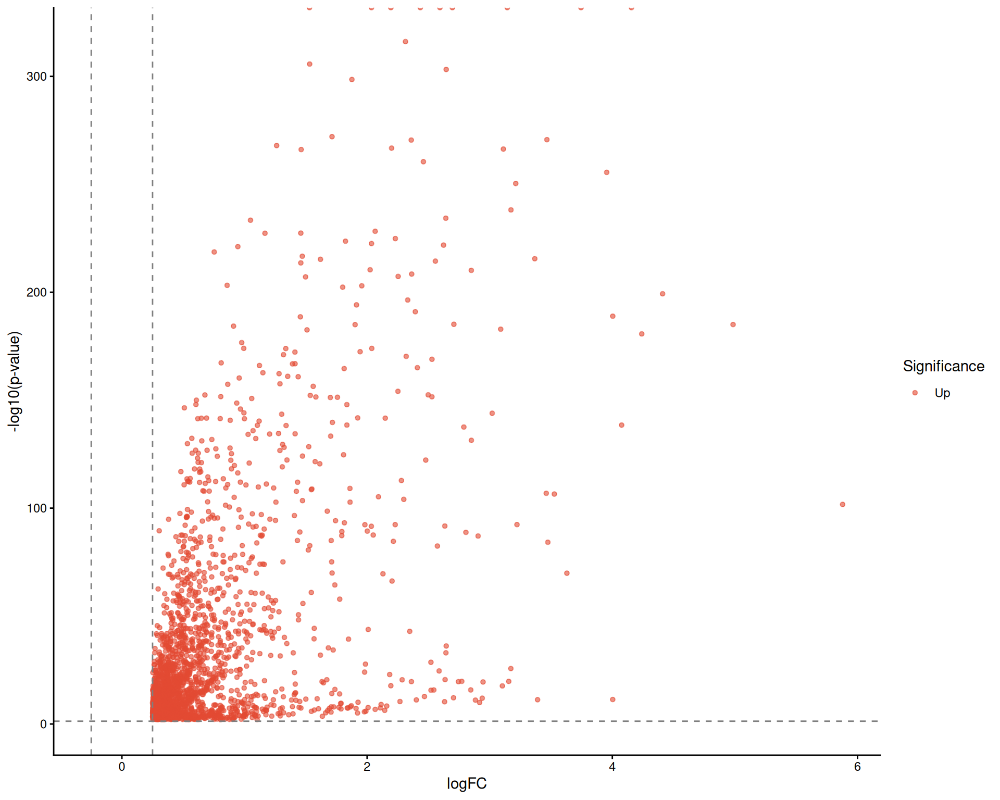
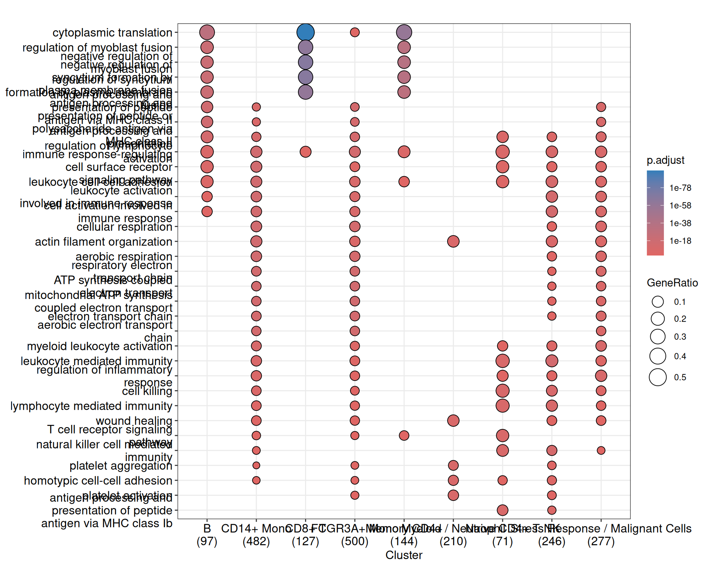

11 Differential Analysis and Functional Interpretation
This mainline is about turning cluster or state differences into interpretable biological claims. In practice, users rarely stop at a marker table: they want to know which genes change, which comparisons are robust, and which pathways explain the contrast.
sclet already provides a clean chain for this problem: run a differential test, retrieve the structured result through accessors, and move directly into enrichment and visualization. This chapter brings those pieces together under one mainline instead of splitting them into isolated algorithm pages.
11.1 Differential expression and pseudobulk testing
Finding marker genes is the bread and butter of single-cell analysis. But single-cell Differential Expression (DE) is notoriously tricky. Due to the vast number of cells (which inflates statistical power) and the zero-inflated nature of the data, standard single-cell DE often yields an overwhelming number of “significant” genes that turn out to be false positives or artifacts of biological replicates.
Reviewers at high-impact journals (like Nature Methods) are increasingly demanding Pseudobulk analysis to control for false discovery rates. sclet makes both standard DE and Pseudobulk DE incredibly straightforward.
In this chapter, the standard single-cell DE examples are executed during book rendering so they also serve as lightweight regression checks. The pseudobulk section now includes a small CI-friendly smoke test built from synthetic donor groupings, while the surrounding discussion still reflects the fact that real pseudobulk designs should be driven by actual biological replicates.
11.2 Standard Single-Cell DE
You can find markers for all clusters using RunDEtest(), which wraps FindMarkers or FindAllMarkers. Importantly, RunDEtest() saves the result as an analysis-state inside the SingleCellExperiment object.
library(sclet)
# Assuming 'sce' has been processed and clustered
sce <- pbmc
# Run differential expression test and record the state
sce <- RunDEtest(sce, only.pos = TRUE, min.pct = 0.25, logfc.threshold = 0.25)
# Visualize the DE results using a Volcano plot
DEtestPlot(sce)
11.2.1 The “What does this gene even do?” Problem
When you get a list of marker genes, you’re often left staring at cryptic acronyms like ZBTB16 or KLRB1. What do they actually do?
sclet provides a handy utility called gene_summary_table() that automatically fetches the full name and biological summary of the genes from the selected orgDb annotation package.
# Get the raw DE results from the state
de_results <- get_detest(sce)$results
# Take the top 5 markers
top_genes <- head(de_results$gene, 5)
# Fetch their biological summaries!
summary_df <- gene_summary_table(
top_genes,
orgDb = "org.Hs.eg.db",
output = "data.frame"
)
print(summary_df)## [1] ENTREZID gene name description
## [5] summary
## <0 rows> (or 0-length row.names)This simple helper can save you hours of manually Googling gene names.
11.3 The Gold Standard: Pseudobulk Analysis
To avoid the inflated p-values of single-cell DE, the current best practice is to aggregate the counts of all cells within the same biological replicate and cell type, creating a “pseudobulk” sample. You then run robust bulk RNA-seq tools (like DESeq2 or edgeR) on these aggregated samples.
sclet handles this elegantly with two functions: AggregateExpression() and FindMarkers_pseudobulk().
11.3.1 Step 1: Aggregate Expression
In a real analysis, your sce object would usually already contain replicate metadata such as donor_id and cell_type. For a runnable book example, we create a simple donor column on the fly and reuse the current cluster labels as grouping labels.
# For a runnable example, we create a simple donor column.
cluster_id <- as.character(SingleCellExperiment::colLabels(sce))
if (length(cluster_id) == 0) {
cluster_id <- as.character(Idents(sce))
}
sce$cluster_id <- cluster_id
sce$donor_id <- rep(paste0("donor", 1:4), length.out = ncol(sce))
# Aggregate counts by cluster and donor
pb_sce <- AggregateExpression(
sce,
group_by = c("cluster_id", "donor_id"),
assay.type = "counts"
)
# The result is a much smaller SummarizedExperiment
# where each column is a "donor-cluster" pseudobulk sample.
dim(pb_sce)## [1] 13656 3611.3.2 Step 2: Pseudobulk DE with DESeq2
Now, you can run DESeq2 directly on this aggregated object to find markers robustly.
cluster_tab <- table(pb_sce$cluster_id)
target_clusters <- names(cluster_tab[cluster_tab >= 2])[1:2]
stopifnot(length(target_clusters) == 2)
pb_subset <- pb_sce[, pb_sce$cluster_id %in% target_clusters]
res <- FindMarkers_pseudobulk(
pb_subset,
design = ~ cluster_id,
contrast = c("cluster_id", target_clusters[1], target_clusters[2])
)
head(res[, c("log2FoldChange", "pvalue", "padj")])## log2FoldChange pvalue padj
## AL627309.1 NA NA NA
## AP006222.2 NA NA NA
## RP11-206L10.2 1.5083674 0.6637038 NA
## RP11-206L10.9 -0.6861079 0.8460543 NA
## LINC00115 0.6159627 0.7460036 NA
## NOC2L 0.2647562 0.5805777 0.8036551By leveraging AggregateExpression() and FindMarkers_pseudobulk(), you completely bypass the inflated p-value problem and ensure your biological findings are robust across actual replicates, not just individual cells.
11.4 Functional enrichment on top of differential results
Once you have identified robust marker genes (using either standard DE or Pseudobulk, as discussed in the previous chapter), the next logical step is to understand the biological pathways they participate in.
sclet provides RunEnrichment() to seamlessly perform functional enrichment analysis (GO/KEGG). This function wraps the powerful clusterProfiler package and registers its results into the analysis-state contract, making it incredibly easy for downstream visualization tools to consume.
The GO example is executed during book rendering so that the book also tests this part of the workflow in CI. The KEGG example remains demonstration-only, because it is more sensitive to identifier preparation and organism-specific setup.
11.5 GO Enrichment
If you have already run RunDEtest(), RunEnrichment() is smart enough to automatically read the significant up-regulated markers from the active detest state. No need to manually extract gene lists!
library(sclet)
sce <- pbmc
sce <- RunDEtest(sce, only.pos = TRUE, min.pct = 0.25, logfc.threshold = 0.25)
# Ensure you have org.Mm.eg.db installed for Mouse data
# or org.Hs.eg.db for Human
library(org.Hs.eg.db)
# Run enrichment analysis based on the DEtest state
sce <- RunEnrichment(
sce,
db = "GO",
orgDb = "org.Hs.eg.db",
keyType = "SYMBOL",
ont = "BP"
)
# Visualize the enrichment results using EnrichmentPlot (wraps enrichplot::dotplot)
EnrichmentPlot(sce, showCategory=5)
11.6 KEGG Enrichment
For KEGG pathway enrichment, it is highly recommended to convert gene symbols to Entrez IDs first, or provide a column with Entrez IDs if available. This example is intentionally left as a template rather than executed in CI, because KEGG runs are more sensitive to identifier hygiene and organism-specific setup than the GO workflow above.